Comparing homologous recombination, site-specific recombination, and transposition
| Homologous Recombination | Sites-Specific Recombination | Transposition | |
|---|---|---|---|
| Recombiination between? | Any homologous sequence | 2 defined sequence elements | Transposon sequnces and target DNA |
| Proteins Required? | All HR proteins | Only a recombinase | Transposase/DNA pol/DNA ligase |
Possible Products of site-specific recombination
Inversion
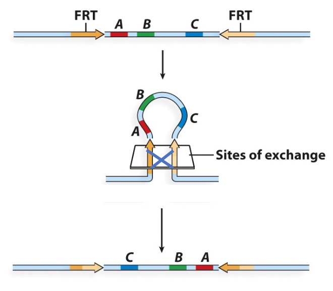
Deletion and Insertion
Deletion and insertion are reversible.
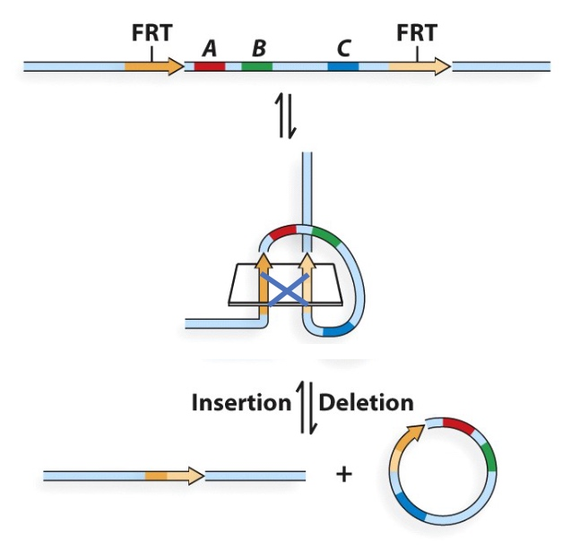
Core can be anything you want, but if you want recombination reaction, you should keep the core region th esame.
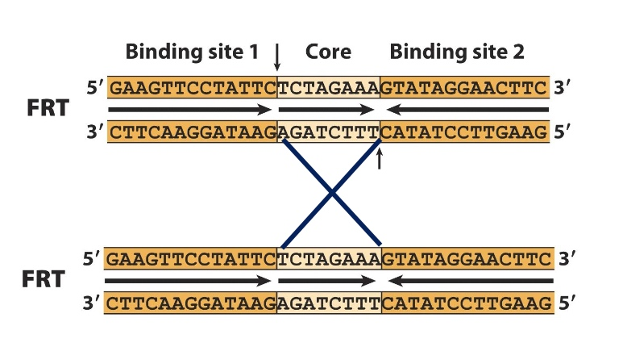
Application: use of the Cre-lox system to trace neurons
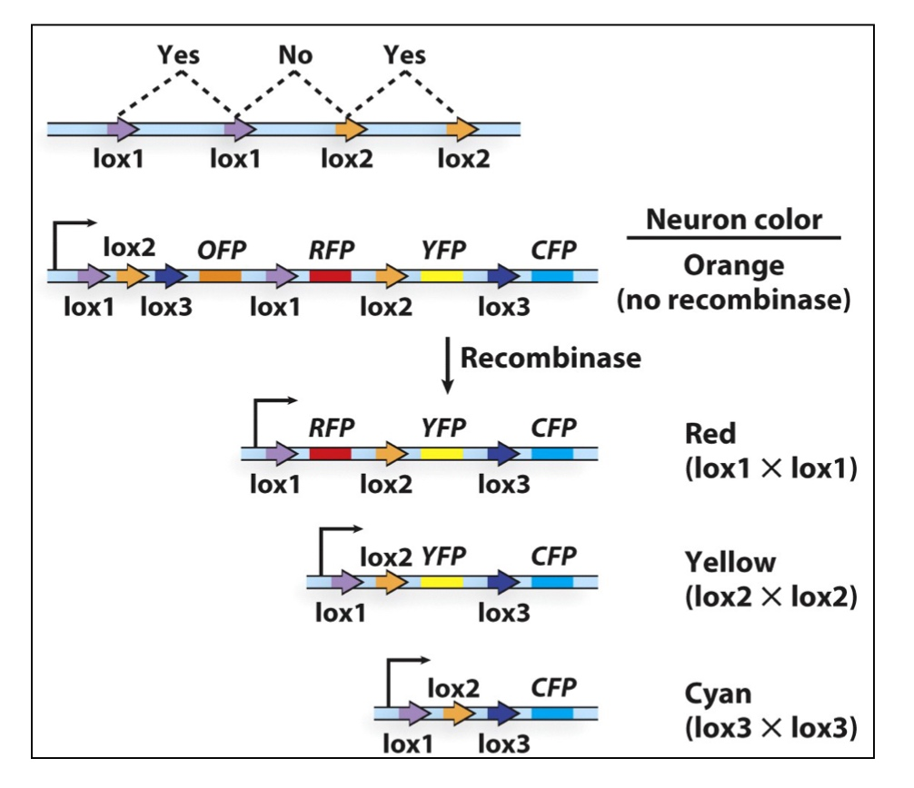
lox1 ,2 and 3 have different core sites.
Poll Everywhere
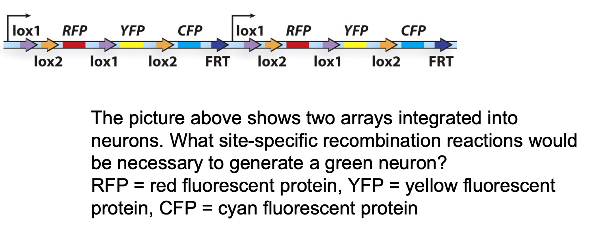
- A. lox1-lox1 in both arrays
- B. lox2-lox2 in both arrays
- C. lox1-lox1 in first array, lox2-lox2 in second array
- D. lox1-lox2 in first array, lox1-lox2 in second array
- E. lox1-lox2 in first array, lox2-lox1 in second array
Transposition
Our Genome is Composes of ~40% transposons
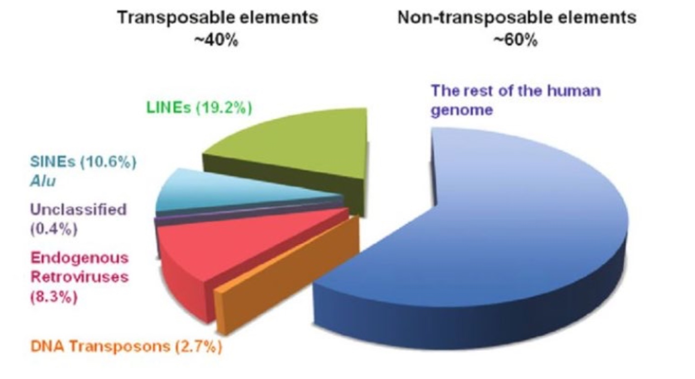
Distribution of Transposons on Various Genomes
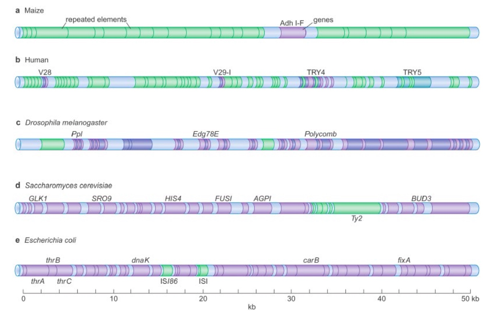
Transposons can "jump" within genomes
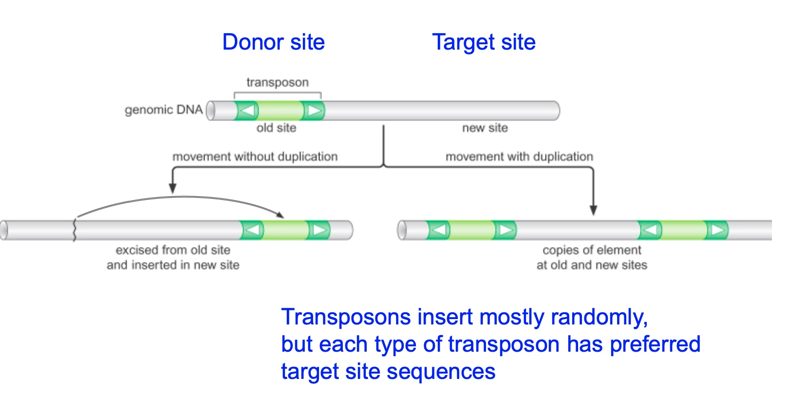
Transposase is an enzyme catalyzed the transposation reaction.
How are transposons classified
???
LTR: long terminal repeats.
ORF: open reading frame
UTR: untranslated region
- DNA transposons
- Virus-like reteotransposons/retroviruses
- Poly-A retrotransposons
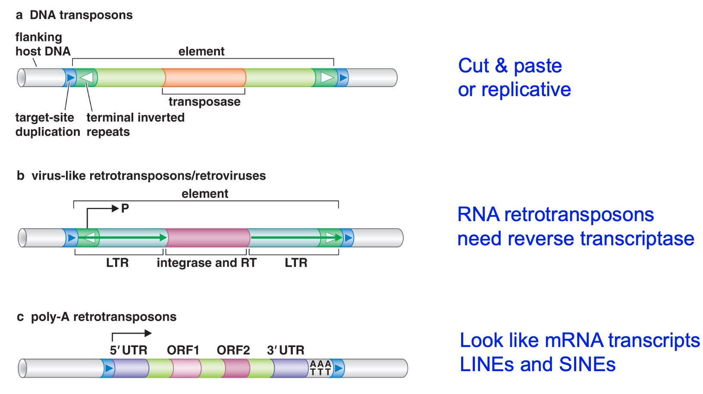
1. DNA Transposon
For a transposon to be active, it has to contain within itself a transposase. Transposases are enzyme going to catalyze the transposition reaction. Cause the transposon to first excise then insert to another place.
So terminal inverted repeats are the sites tranposase need to bind.
Target-site duplication is the best way to identify whether or not a transposon is in a genome.
2. Virus-like Retrotransposons / retrovirusestarg
Will transpose within RNA intermediate.
Instead of transposase, it has integrase and reverse transcriptase.
LTR: long teminal repeats.
White arrows are inverted repeats. This is what integrase is going to bind.
It can also be identified by target site duplication.
3. Poly-A Retrotransposons
Related to messager RNA.
Also need reverse transcriptase.
UTR: untranslated region.
1. DNA transposons: Some replicate through a cut and paste mechanism
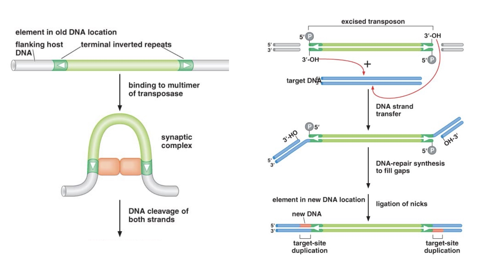
Bacterial Tn10: a cut-and-paste composite transposon
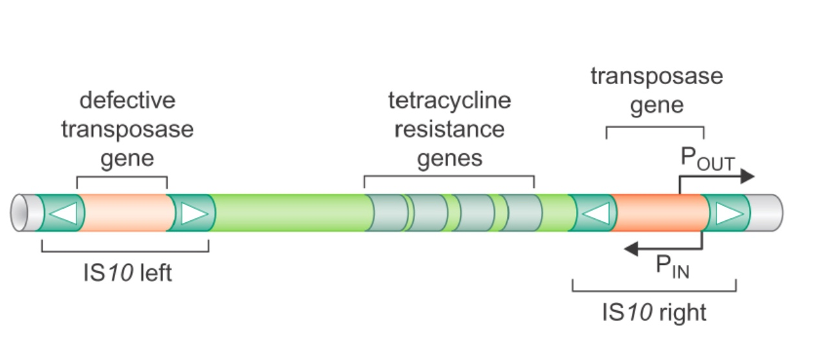
Poll Everywhere Application Question
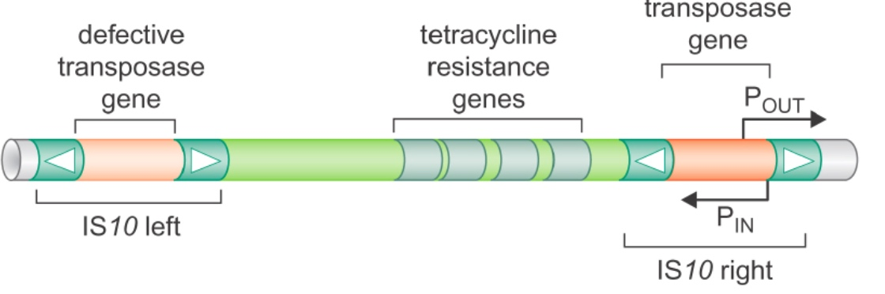
For each of these transposition scenarios, state whether the event would result in:
(1) The mobilization of an autonomous transposon that confers antibiotic resistance
(2) The mobilization of an autonomous transposon that does not confer antibiotic resistance
(3) The mobilization of a non-autonomous transposon that confers antibiotic resistance
(4) The mobilization of a non-autonomous transposon that does not confer antibiotic resistance
A. IS10 right transposes to another target site (2)
B. IS10 left transposes to another target site (4)
C. Tn10 transposes to another target site (1)
A is autonomous because it has transposase gene. For B, it does not have transposase gene, so it cannot move to anywhere else in the genome.
Transposition of Tn10 is coupled to replication
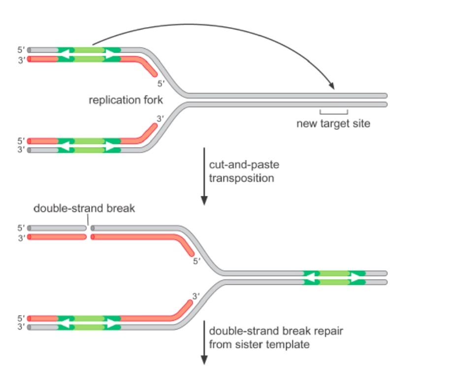
After transposition, there will be homologous recombination to fix the gap.
The left new syntheized DNA is hemi-methylated.
Tn10 transposase binds more tightly to hemi-methylated DNA.
After Tn10 excises, the double-strand break is repaired by homologous recombination.
2. LTR retrotransposons(related to retroviruses)
If we suppress the reverse transciption, virus will not propagate.
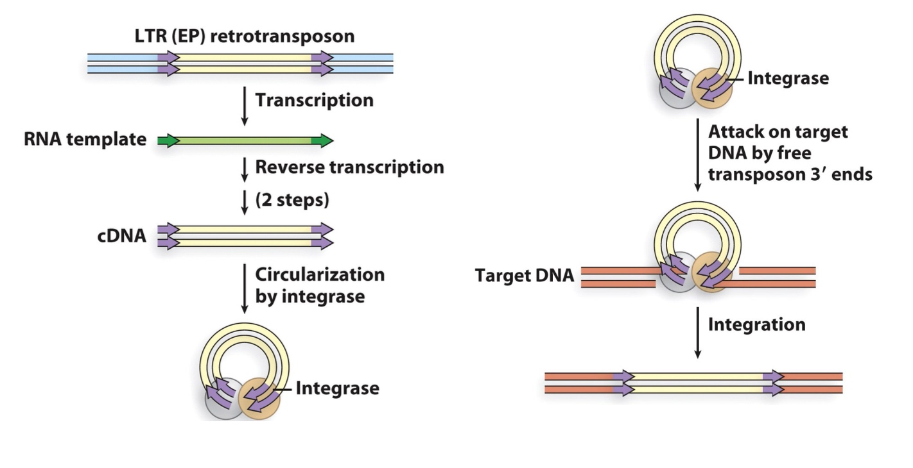
3. Non-LTR retrotransposons
Still need reverse transcription and integrase.
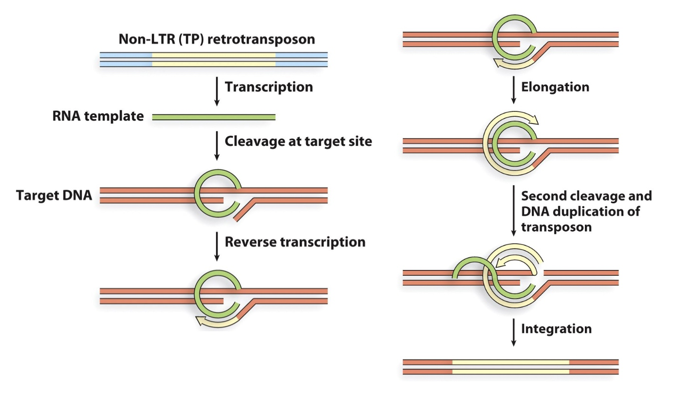
Most time they are immobile.